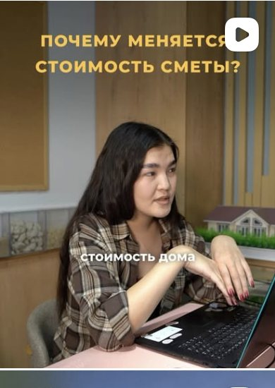
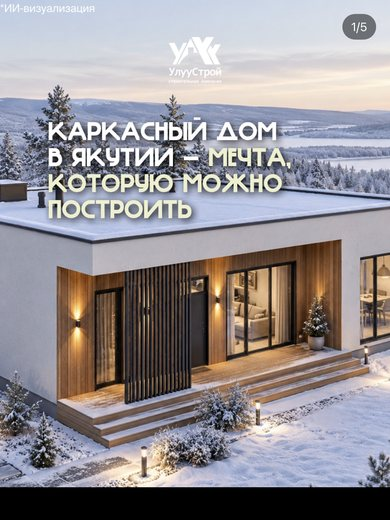
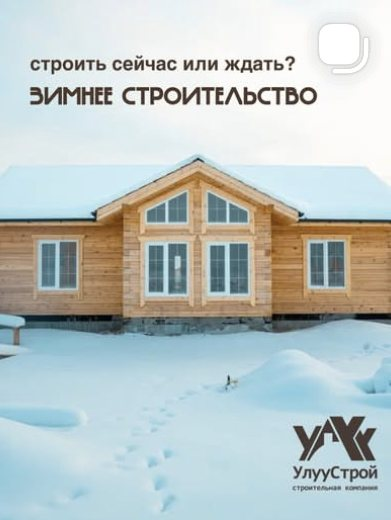
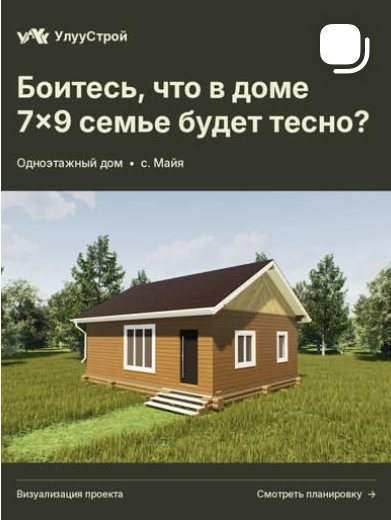
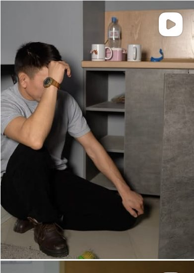

Главное в пяти пунктах
Вы честно рассказываете о стройке, и это редкость. «Почему меняется стоимость сметы», «Брус двигается, честно говорим почему». Карусель про каркасный дом в Якутии собрала 428 лайков и 178 пересылок.
Но после ролика человек всё равно пишет: «сколько будет дом 100 метров из бруса и когда можно начать». В ответ автоответ присылает четыре вопроса, а цифры нет ни в шапке, ни в постах с проектами.
В поиске по Якутску первыми стоят сайты-каталоги с ценой за м², проектами и платежом по ипотеке под каждым домом. У части из них в выдаче московский телефон.
Сайта УлууСтрой я в выдаче не нашла. Есть карточка в 2ГИС и страница на orgs.biz, но адрес и телефоны там разные.
Сайт делается за 7–10 дней: калькулятор по площади и материалу, готовые дома с ценой и запись на консультацию с вашими четырьмя вопросами. Человек приходит с цифрой, а консультация уходит в детали.
Что у вас уже сильное
- «Строим надёжные дома. Рассказываем о строительстве». Вы не прячете неудобные темы: смета может поменяться, брус двигается. Тому, кто боится доплат посреди стройки, это объясняет больше, чем любая гарантия.
- 22 тыс. подписчиков и 773 публикации. Каркасный дом с плоской крышей, гибкая керамика, клик-фальц и фиброцемент вызвали 30 комментариев: людям интересно, что в Якутии можно строить не только «как у всех».
- Два материала в одних руках. Вы строите и из бруса, и каркасные дома, поэтому можете честно сравнить их для конкретного участка и бюджета.
- Стройка зимой. Пост «Строить сейчас или ждать?» отвечает на вопрос «когда можно начать» раньше, чем его зададут.
- Автоответ в WhatsApp уже задаёт правильные вопросы. Участок, что строить, проект, ипотека или наличные. Это готовая анкета, сайт просто поставит её после расчёта.
- «Экскурсия» и «Наша команда» в сторис. Дом можно показать вживую, а людей, которые его строят, по именам. В отзывах в 2ГИС пишут: «у нас голова не болела ни о доставке стройматериалов, подключения благоустройства, газового отопления».






Посты и обложки рилс из вашего Instagram @uluu_stroy
Что сейчас мешает
- Цены нет нигде: ни «от», ни за м², ни у проекта 7×9 в Майе. Человек пишет за цифрой, а получает анкету из четырёх вопросов. Отвечать на анкету, не зная даже порядка суммы, готов не каждый.
- Готовые дома лежат в хайлайтах и в ленте среди 773 публикаций. Через месяц найти «тот одноэтажный 7×9» почти невозможно, и человек снова пишет вам.
- Контакты в разных местах не совпадают. В шапке WhatsApp +7 924 465‑99‑83, в поиске встречаются ещё +7 914 309‑99‑45 и +7 914 263‑83‑41, а адрес то Жорницкого, 29/2, то 33/1.
- В 2ГИС у карточки стоит пометка, что данные давно не обновлялись. Для стройки на несколько миллионов это лишний повод засомневаться.
- Кто ищет «дом из бруса под ключ Якутск» в Яндексе, видит каталоги с ценами и калькуляторами. До ваших честных роликов он не доходит.
Что спрашивают перед стройкой
Две группы вопросов. Сайт отвечает на обе до того, как человек напишет вам, а часть ответов у вас уже снята.
Цена и сроки
Материал и деньги
Кто ещё работает в нише
Местные компании
Шишкин Дом
shishkindom-ykt.ruДома под ключ из бруса и камня, инженерные коммуникации, оформление ипотеки, в том числе Дальневосточной. На Строим.ДОМ.РФ средняя стоимость дома 75 м² указана 3,9 млн ₽. В отзыве в 2ГИС: дом под ключ построили за месяц.
ИЖС Ипотека
карточка в 2ГИСНазвание уже говорит, с чем приходить. В рекламе в 2ГИС: договор на 2026 год по Дальневосточной ипотеке и СИП-панели на гараж в подарок, скидки за наличный расчёт. Три филиала.
Милдом
карточка в 2ГИСДома и гаражи из СИП-панелей, домокомплекты. До 30 сентября шла акция «дом и гараж за 1 500 000 ₽». Оценка 5 по 18 отзывам.
Что видит человек в поиске «строительство домов Якутск»
СтройДом
stroydom-yakutsk.ruКаталог проектов с названиями: «Триумф», «Юнона», «Скала», 141–214 м² за 6,1–7,2 млн ₽. Под каждым проектом платёж по ипотеке, от 25–30 тыс. ₽ в месяц. Онлайн-калькулятор, в выдаче номер +7 499.
Строительство домов 14
stroitelstvo-domov14.ruКаталог загородных проектов с планировками, у части проектов метка «В ипотеку». Дома из бревна от 19 500 ₽ за м², домокомплекты от 329 940 ₽.
TGV-Строй
yakutsk.tgv-stroy.ruОтдельная страница «дома из бруса под ключ в Якутске»: от 61 000 ₽ за м², гарантия до 5 лет, срок от 1 месяца, готовые проекты.
Описания собраны по открытым данным, карточкам 2ГИС и поисковой выдаче на 17 ноября 2026. Цены и условия у компаний могли измениться.
Что стало нормой
- Цена «от», за м² или у каждого проекта
- Ипотека и ДВИ прямо в рекламе и карточке проекта
- Платёж в месяц вместо полной суммы
- Подарок или скидка за договор
- Каталог проектов с планировками
Чего я у них не встретила
- Честного рассказа про минусы материала, как ваше «брус двигается»
- Сравнения бруса и каркаса от компании, которая строит из обоих
- Расчёта под ключ сразу с газом и отоплением
- Записи на экскурсию по готовому дому
- Видео людей, которые будут строить
Что должен делать ваш сайт
Считать дом
Брус или каркас, площадь, этажи, коробка, тёплый контур или под ключ. Вилка цены за минуту, по вашим ставкам.
Задавать ваши четыре вопроса
Участок, проект, ипотека или наличные. Ответы приходят вам в WhatsApp вместе с расчётом одним сообщением.
Показывать готовые дома
Дом 7×9 в Майе и другие: площадь, планировка, цена под ключ и кнопка «Посчитать такой же».
Честно сравнивать материалы
Почему брус двигается, чем тёплый каркас, какие бывают фасады. Рядом с ответом ваш рилс.
Записывать на консультацию и экскурсию
День и время, офис или выезд в готовый дом. Без звонков туда-сюда.
Находиться в поиске
По запросам «дом из бруса Якутск», «каркасный дом под ключ Якутск», плюс ссылка в шапке Instagram и в WhatsApp.
Было и стало
Так обычно выглядит путь от первого вопроса до консультации, и так он выглядит с сайтом.
Человек хотел цифру, а получил анкету. Сумму он узнает, когда менеджер освободится, а пока может написать в другую компанию.
Одно сообщение, все ответы уже внутри. Консультация сразу уходит в детали. Цифры в примере условные, на сайте будут ваши.
Что можно предложить вашим клиентам
Это варианты на обсуждение, берите то, что подходит.
Дом 7×9 с ценой «от»
Один готовый проект с суммой под ключ прямо на главном. Вопрос «сколько примерно» закрывается до переписки, а пост «боитесь, что будет тесно?» ведёт на планировку.
Место в графике на весну
Кто считает дом зимой, бронирует начало стройки. Плашка на первом экране до марта и ответ на «когда можно начать».
Экскурсия по субботам
Запись на сайте в готовый дом из бруса или каркаса. Человек трогает стены и знакомится с командой до договора.
Памятка «Что подготовить к стройке»
Ваши четыре вопроса превращаются в короткий гид: участок, проект, ипотека. Человек оставляет телефон, чтобы её получить.
Что нужно уточнить
- Можно ли показывать на сайте цены «от»? Вам удобнее за м² по брусу и каркасу или за готовые проекты? Что входит в коробку, тёплый контур и «под ключ»?
- Газ, отопление и благоустройство входят в «под ключ» или считаются отдельно?
- Какие проекты с планировками и ценами можно показать, кроме дома 7×9 в Майе? Какой брус используете (профилированный, клеёный), и что за «Super брус» в сторис?
- Работаете ли с Дальневосточной ипотекой и маткапиталом, помогаете ли с оформлением? В 2ГИС я видела такую пометку.
- Где строите: Якутск, Хатассы, Майя, какие ещё сёла и улусы?
- Какой адрес офиса и какой телефон ставить на сайт? Сейчас встречаются Жорницкого, 29/2 и 33/1 и три разных номера.
- Можно ли писать, сколько лет вы строите и сколько домов сдали? По реестру компания работает с 2018 года.
- Как проходит экскурсия: в какой дом, по каким дням? Кого из команды показать на сайте?
- Реквизиты ООО «УлууСтрой» для политики конфиденциальности.